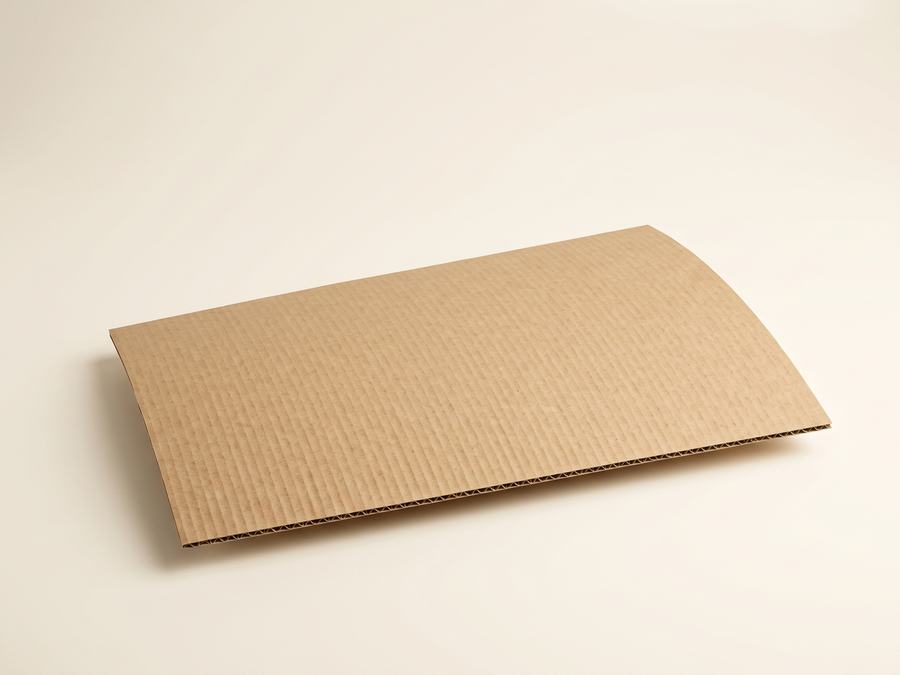

Гофрокартон делают в том числе из вторсырья, и сам он перерабатывается многократно. Отработанную тару не обязательно везти куда-то далеко — макулатуру мы принимаем сами, на пункте в Заславле или с вывозом нашим транспортом.
Почему картон — удачный материал
Короб, лоток и укрывной лист после использования не становятся мусором: это сырьё. Картон собирают, распускают на волокно и снова пускают в дело — и так многократно. Поэтому гофроупаковка закрывает цикл лучше многих альтернатив: отходы упаковки возвращаются в производство упаковки.
Целлюлозное волокно в картоне выдерживает 5–7 циклов переработки, прежде чем становится слишком коротким и слабым для новой бумаги. Поэтому важно не «убивать» цикл раньше времени: подмоченный, заламинированный или сильно загрязнённый картон в переработку уже не идёт и просто выпадает из оборота.
Тот же принцип работает и внутри ассортимента. Картонный поддон, например, весит в разы меньше деревянного, не требует фитосанитарной обработки при экспорте и сдаётся в переработку вместе с остальной упаковкой — отдельно утилизировать его не нужно.
Что мы принимаем
- Макулатура. Книги, тетради, журналы, картон и белая офисная бумага. Принимаем сухую и чистую бумагу — без скоб, скрепок и ламинации.
- На пункте приёма в Заславле, ул. Вокзальная, 8Б — 7–20 коп./кг в зависимости от сорта и чистоты.
- С выездом на точку, от 200 кг — 5 коп./кг.
- Самовывоз нашим транспортом, от 500 кг — бесплатно.
- Отходы полиэтилена. Стрейч-плёнка и ПВД — 0,40–0,70 руб./кг, забираем из любого района города, сортировку берём на себя.
Условия и телефоны — на странице «Приём макулатуры». Пункт приёма работает пн–сб с 8:00 до 17:00.
Чистая или загрязнённая партия: в чём разница
Сухой картон и бумага без скотча, скоб, ламинации и посторонних вложений. Идёт по верхнему сорту — 7–20 коп./кг, принимается без задержек и учитывается в полном весе партии.
Мокрый, заплесневелый или смешанный с плёнкой и пищевыми остатками картон. Такое сырьё либо принимают по сниженной ставке, либо не принимают вовсе — сортировать смесь на месте невыгодно ни вам, ни нам.
Что принимаем / что не принимаем
| Категория | Статус |
|---|---|
| Чистый сухой картон без загрязнений | ✓ Принимаем |
| Картон со скотчем, скобами и стреппинг-лентой | ✓ Принимаем, но со скидкой сорта |
| Ламинированный или восковой картон | ✗ Не принимаем |
| Мокрый или заплесневелый картон | ✗ Не принимаем |
| Картон с остатками пищевых продуктов | ✗ Не принимаем или по сниженной ставке |
Замкнутый цикл на практике
Схема простая: вы покупаете у нас упаковку, отработанный картон и плёнку сдаёте нам же. Для склада это меньше мусора и лишних вывозов, для нас — сырьё, а для вас ещё и деньги за макулатуру вместо платы за утилизацию.
Чем чище сырьё, тем выше сорт и цена приёмки. Поэтому картон стоит хранить сухим — заодно он дольше остаётся пригодным как тара. Как это организовать, описано в статье как хранить гофротару.
Цикл переработки картона
Целлюлозное сырьё для производства бумаги и картона.
Производство листов гофрокартона.
Короба, лотки и другая тара из готового картона.
Использованная тара сдаётся на переработку.
Волокно возвращается в производство — до 5–7 циклов переработки.



Что можно сделать уже сейчас
- Выделить на складе место под сбор картона — отдельно от общего мусора.
- Не смешивать картон с плёнкой: их принимают по разным ставкам.
- Накопить партию от 200 кг — тогда мы заберём её с вашей точки.
- Заказывать упаковку под размер товара: меньше пустот — меньше отходов. Как считать размер, разобрано здесь.
Частые ошибки при сдаче макулатуры
- Оставляют скотч, скобы и пластиковые окна от коробов — их приходится отдирать вручную, а партия из-за этого теряет в сорте.
- Хранят картон под открытым небом или на влажном полу: отсыревшая бумага теряет прочность волокна и на переработку уже не годится.
- Сваливают картон в общий контейнер с бытовым мусором — раздельный сбор с самого начала экономит время на сортировке и повышает цену приёмки.
- Копят слишком маленькие партии и вызывают вывоз каждый раз заново — выгоднее накопить от 200 кг и оформить один выезд или бесплатный самовывоз от 500 кг.
Сдайте макулатуру в «Арт-Пак Плюс» — 223036, Минский р-н, г. Заславль, ул. Вокзальная, 8Б.